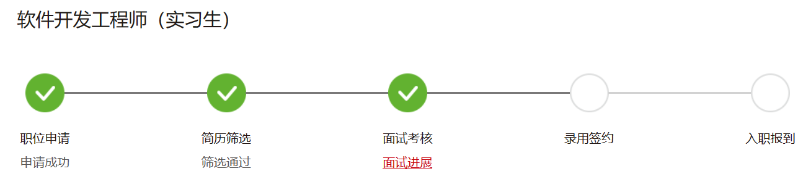
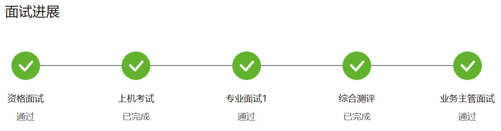
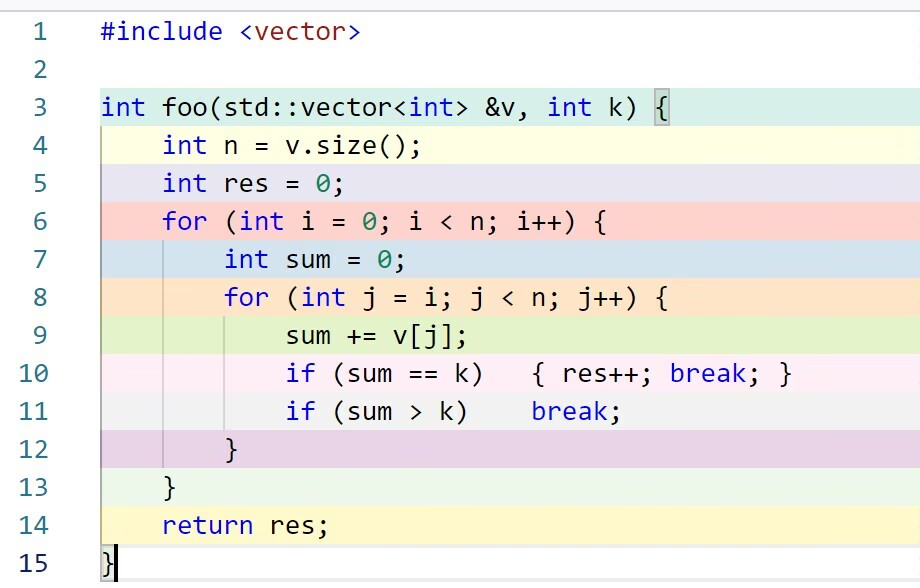

华为 编译相关¶
岗位是「编译器与编程语言开发工程师」。
实习¶
3.2 投的，3.23 才笔试。
3.24 做了个性测试。
3.23 笔试¶
系统经常崩，题意不清，体验不是很好。 T1 改了好久终于 AC 了，原来是要跨上最后一级台阶而不是跨到最后一级台阶的上面； T2 改了好久也终于 AC 了，原来两边都有可能有对面没有的 tag； T3 懒得做了，但是输出 false 能有 25% 的分，非常离谱。
T1¶
有 n (~100000) 级台阶，每级台阶有一个魔法值，表示从这个台阶一步最多可以向上跨多少级；给定 k 表示最多能跨几步；要求计算能否在 k 步内到达最上面，如果可以输出最小的步数，不可以则输出 -1
我的答案
#include <iostream>
using namespace std;
int arr[200005];
int maxM = 0;
int findCurrent(int cur) {
//cout << endl << cur << ": ";
for (int i = max(cur - maxM, 0); i < cur; i++) {
//cout << arr[i] << " ";
if (arr[i] >= cur)
return i;
}
return -1;
}
int main() {
int n;
cin >> n;
for (int i = 0; i < n; i++) {
cin >> arr[i];
if (arr[i] > maxM)
maxM = arr[i] + 1;
arr[i] += i;
}
/*for (int i = 0; i < n; i++)
cout << arr[i] << " ";
cout <<endl;*/
int x, current = n - 1;
cin >> x;
for (int i = 1; i <= x; i++) {
current = findCurrent(current);
if (current == 0) {
cout << i << endl;
return 0;
}
if (current == -1) {
cout << -1 << endl;
return 0;
}
}
cout << -1 << endl;
return 0;
}
T2¶
定义了一种数据格式 TLV，其中每个部分由 1 个字节的 tag，1 个字节的 length，以及 length 个字节的 value 组成。接收的报文有若干个这样的数据首尾相接组成，每个字节用 2 位 16 进制数表示，字母均为大写。例如 0F04ABABABAB1001FF 的第一个 tag 是 0F，length 是 04，后面的 4 个字节 ABABABAB 是数据；然后 10 是下一个数据的 tag，length 是 01，后面的 1 个字节 FF 是数据。
输入一个这样的报文 (~10000 chars)，输入一个 n(~1000)，输入 n 个十进制数表示需要的 tags。保证输入的报文和需要的 tags 中的 tag 都是严格递增的。对于 tags 中的每个 tag，要求输出其 length 和 offset，其中 offset 表示这个 tag 的 value 在这个报文中的偏移量，从 0 开始，以 byte 为单位。
tags 中的 tag 有的可能不存在于报文中，这种情况下 length 和 offset 均视为 0。报文的末尾可能有不完整的数据，这种数据应当被抛弃。
我的答案
#include <iostream>
#include <vector>
using namespace std;
string str; // ~10000
int head = 0;
int getHex(int offset) {
char c = str[head + offset];
if (c >= '0' && c <= '9')
return c - '0';
return c - 'A' + 10;
}
int getByte() {
if (head + 2 > str.size())
return -1;
int high = getHex(0);
int low = getHex(1);
//cout << str[head] << " " << str[head + 1] << " " << high << " " << low << endl;
return high * 16 + low;
}
vector<int> getPacket() {
if (head >= str.size()) {
return {-1, 0, 0};
}
int tag = getByte();
head += 2;
if (tag == -1) {
return {-1, 0, 0};
}
int length = getByte();
head += 2;
if (length == -1) {
return {-1, 0, 0};
}
int offset = head / 2;
head += length * 2;
if (head > str.size()) {
return {-1, 0, 0};
}
return {tag, length, offset};
}
int main() {
cin >> str;
int n; // ~1000
cin >> n;
int queries[1005];
for (int i = 0; i < n; i++) {
cin >> queries[i];
}
vector<vector<int>> results;
while (true) {
vector<int> temp = getPacket();
if (temp[0] == -1)
break;
results.push_back(temp);
}
int j = 0;
for (int i = 0; i < n; i++) {
if (j >= results.size()) {
cout << "0 0\n";
}
else if (queries[i] == results[j][0]) {
cout << results[j][1] << " " << results[j][2] << endl;
j++;
}
else if (queries[i] > results[j][0]) {
i--; j++;
}
else {
cout << "0 0\n";
}
}
return 0;
}
T3¶
安排面试。有若干编程语言，m 个面试官和 n 个面试者。每个面试官掌握若干编程语言，每个面试者面试一门语言。问在每个面试官最多能面 k 个面试者的情况下，是否能够找到一种安排。
数据范围忘了。
讨论
跟 27rabbit 先生讨论得出了我肯定不会做的结论。好像是最大流还是啥。
4.7 技术面¶
时长大概 30 分钟。
自我介绍。没有对自我介绍展开任何提问。
复盘机试题目。我说了第一个题的思路，后面的他就没问了。
现场做题，给 20 分钟的时间。问了数据范围，给 N~100, a[i]~10000。
题目
给定一个用字符数组表示的 CPU 需要执行的任务列表。其中包含使用大写的 A - Z 字母表示的 26 种不同种类的任务。
任务可以以任意顺序执行，并且每个任务都可以在 1 个单位时间内执行完。CPU 在任何一个单位时间内都可以执行一个任务，或者在待命状态。
然而，两个相同种类的任务之间必须有长度为 n 的冷却时间，因此至少有连续 n 个单位时间内 CPU 在执行不同的任务，或者在待命状态。
你需要计算完成所有任务所需要的最短时间。
示例 1：
输入: tasks = ["A","A","A","B","B","B"], n = 2
输出: 8
执行顺序: A -> B -> (待命) -> A -> B -> (待命) -> A -> B.
我的答案
#include <iostream>
#include <vector>
#include <algorithm>
using namespace std;
int shortestTime(vector<char> &tasks, int n) {
int currentTime = 0;
vector<int> count(26, 0);
auto totTasks = tasks.size();
for (auto c : tasks)
count[c - 'A']++;
sort(count.begin(), count.end());
vector<int> lastTask(26, -1);
while (totTasks) {
for (int i = 25; i >= 0; i--)
if (count[i] && (lastTask[i] == -1 || currentTime - lastTask[i] > n)) {
count[i]--;
totTasks--;
lastTask[i] = currentTime;
cout << currentTime << " " << i << endl;
break;
}
currentTime++;
}
return currentTime;
}
int main() {
int n;
string input;
cin >> input;
vector<char> tasks;
for (auto &c : input)
if (c >= 'A' && c <= 'Z')
tasks.push_back(c);
cin >> n;
cout << shortestTime(tasks, n) << endl;
return 0;
}
问了做的编译器的相关问题。问了词法分析怎么实现的，我说是用 flex 的，但是原理我知道。他让我介绍一下原理。
然后就结束了，也没有反问环节。
4.7 主管面¶
本来是紧接着上一个面试的，但是因为我有课，安排在了晚上。时长只有 15 分钟。
自我介绍。问了 MUA 解释器的事情，包含哪些重要的模块。
给一个题目，让我说思路：给一个链表和一个数字 N，返回删除掉倒数第 N 个结点的链表。经典双指针。
问了实习的主要目的。回答了希望有实习经历；体验一下编程语言和编译在工业界的落地，获取实际经历；了解后面的发展方向。
问了未来几年的发展规划。回答了如果能保研就和老师继续学编程语言，保不了就就业。
问为什么喜欢编程语言和编译器。回答了对其他方向没找到兴趣，但是手写过编译器和解释器，正在给大家朋辈辅学将编译原理；因此从兴趣和经验来说都比较倾向这个方向。另外和老师聊过，认为有很多相关的发展方向，前景不错。
问了编译器的情况。问了符号表是怎么实现的。
问了如果实习的话大概能实习多久。考不考虑 IDE 相关的岗位，回答对编程语言更感兴趣一些。
反问阶段，问了大概会做什么具体工作。回答了有两类实习生，一类是从零开始团队协作做一个课程设计一样的东西；还有一类的是个人在现有项目之上找突破。是可以选择的。
另外问了有没有转正的机会。回答了「理论上是有可能的」，但是「现在实习生面试和校招面试是解耦的」。实习完之后如果实习比较好会有一个成绩，类似提前批一样走流程。
主管面结束后，HR 通知我面试都通过了，只剩下 offer 审批流程了；并在 4.14 通知我有一个信息填错了让我修改，次日要 offer 材料上报审批。我改了之后就再也没有消息了。官网上的进展停留在下面的情况：


秋招¶
9.19 去问了 HR 还有没有机会，HR 说有的，并关注是否考虑读研。
因为实习笔试过了，所以没有安排笔试。
9.26 技术一面¶
面试官很和蔼，一直在正面评价「可以看出来你……」。
说简历和笔试情况都不错。还是要对笔试复盘。这次对三个题都聊了一下，但是我基本都记不清了；给我介绍了第三题，但是我还是不会做。
问了源代码是怎么变成可执行文件的。
问了接触过什么样的中间代码，这种中间码在现在来看是否过时。我回答基本没有了解，教材上的两种都非常过时。我听说过 LLVM 的 IR，但是没看过。我们当时用的中间代码是自己设计的，因为不想用 LLVM。
问了喜欢什么语言，是类型安全的吗，对这门语言的评价是什么。我回答是 C++，类型是不安全的。
问了咸鱼雀的动机和解决方案。回答了做的非常潦草，只用了几天，没什么含金量；大多数时间花在学 SpringBoot 上。做了一些加密、蓝绿发布之类的设计。
介绍了 IDE 的智能化，例如 CLion。IDE 也需要多用户并行编辑。看起来像劝我去 IDE，但是他没说。
写代码。给一个正整数数组和一个正整数 k，返回有多少个连续子数组，其和刚好为 k。
我的答案
应该是个双指针，但是当时不会双指针。写了朴素循环：

问有什么优化思路，我边想边说，说到了前缀和，他也没继续问，直接往下走了。
反问阶段。问具体做什么工作。问了仓颉解决什么问题，是解决生态问题还是什么。回答最开始做是因为各种语言都有好特性，但是没有一门语言原生支持这些特性，所以华为想做。
介绍了如果想做编程语言或者编译，华为确实是国内最好的选择。
9.26 技术二面¶
自我介绍。面试官说看了我的博客，内容挺丰富的。
让介绍了解释器的设计。
让介绍了对面向对象的理解。追问了「如果你意识到多态在这里是最重要的话，那说明你已经有一定代码量了。那为什么人们说起面向对象，封装性都排在第一位呢？」
让举一个多态的例子。
问了不了解设计模式，我说不了解。
问 C++ 编译时内存分配有几种情况，我说没有了解过。
问 C 和 C++ 之间 static 关键字的区别。我说没怎么用过 C，于是让我介绍 C++ 中 static 的含义。
问如何实现 HashMap，如何解决冲突。
让在线做道题，直接给了 LeetCode 链接：https://leetcode.cn/problems/defuse-the-bomb/。
我的答案
class Solution {
public:
int sum_k(vector<int> &v, int begin, int k) {
int n = v.size();
int sum = 0;
for (int i = 0; i < k; i++)
sum += v[(begin + i) % n];
return sum;
}
vector<int> decrypt(vector<int>& code, int k) {
if (k == 0) return vector<int>(code.size(), 0);
int n = code.size();
vector<int> result(code.size());
if (k > 0) {
for (int i = 0; i < n; i++)
result[i] = sum_k(code, (i + 1) % n, k);
return result;
}
for (int i = 0; i < n; i++)
result[i] = sum_k(code, (i + n + k) % n, -k);
return result;
}
};
问到现在写过的代码量是多少。
让举个例子说明遇到的一个棘手的问题，以及如何解决的。
问最近有没有读技术类的书籍。
问有没有在技术领域之外学别的内容，对生活上有什么帮助。
反问阶段，问了公司对校招生有什么方面的期待。面试官说「从技术来说，你跟我们的部门非常非常 match」。同时更关注沟通能力和学习能力，还有抗压之类的能力。
9.30 主管面¶
这一场大概 30 min。面试官是中央软件院 IDE Lab 的主任。
自我介绍。「首先能对编译原理产生兴趣就很不错了。」
让大概讲那个 Pascal 的编译器。问对 LLVM 或者 gcc 有什么了解，我回答没有了解，因为不知道从哪里入手。「全国最能入门的地方就是华为了。」
问了解释器做了什么。
问了实习过程中做的那个优化。问为什么出发很慢，我大概扯了扯，他说因为除法的部件是没办法做流水的。
问了将来的打算。我说打算直接工作，对编译器和编程语言都比较感兴趣。
问除了 gcc 和 LLVM 之外还知不知道别的编译器。介绍了华为内部是有一个编译器的，叫方舟；对于想从事这个方向工作的人来说这是一个非常好的机会，因为有很多新东西可以做。「现在最好的学习机会就在这里。」
反问阶段。我问了方舟的动机是什么，解决什么问题。介绍了 LLVM 将编译器的门槛降低了下来，但代价是在一些高性能的编译上是有缺陷的。LLVM 追赶上 gcc 的性能花了七八年，但是方舟只花了一年。因为方舟有更现代的体系和架构，和 LLVM 的设计理念不一样。
面试通过当天，HR 打电话说公司 offer 要到 10 月底统一发，需要等一等。
10.12，HR 打电话来问有没有其他 offer，我回答暂时没有。
10.31，HR 来问有没有其他 offer，我回答有几个，还在考虑；HR 表示我的 offer 已经通过了部门审批，正在进行平台审批；我问还要多久，HR 说可能还要一两周，今年整体都比较晚。HR 问现在有的 offer 的情况，我大概透露了薪资，并表示在相应公司回复的 ddl 之前如果华为这边还没出 offer 就去那边了，ddl 是 11.7。
11.7，再去问 HR，HR 说暂时还没出，问我是不是准备签了，我说是的。然后就没消息了。
还是很可惜的QWQ 觉得是很好的一个机会
创建日期: 2023-01-02
颜色主题调整
评论区~
有用的话请给我个赞和 star => 快来跟我聊天~
快来跟我聊天~